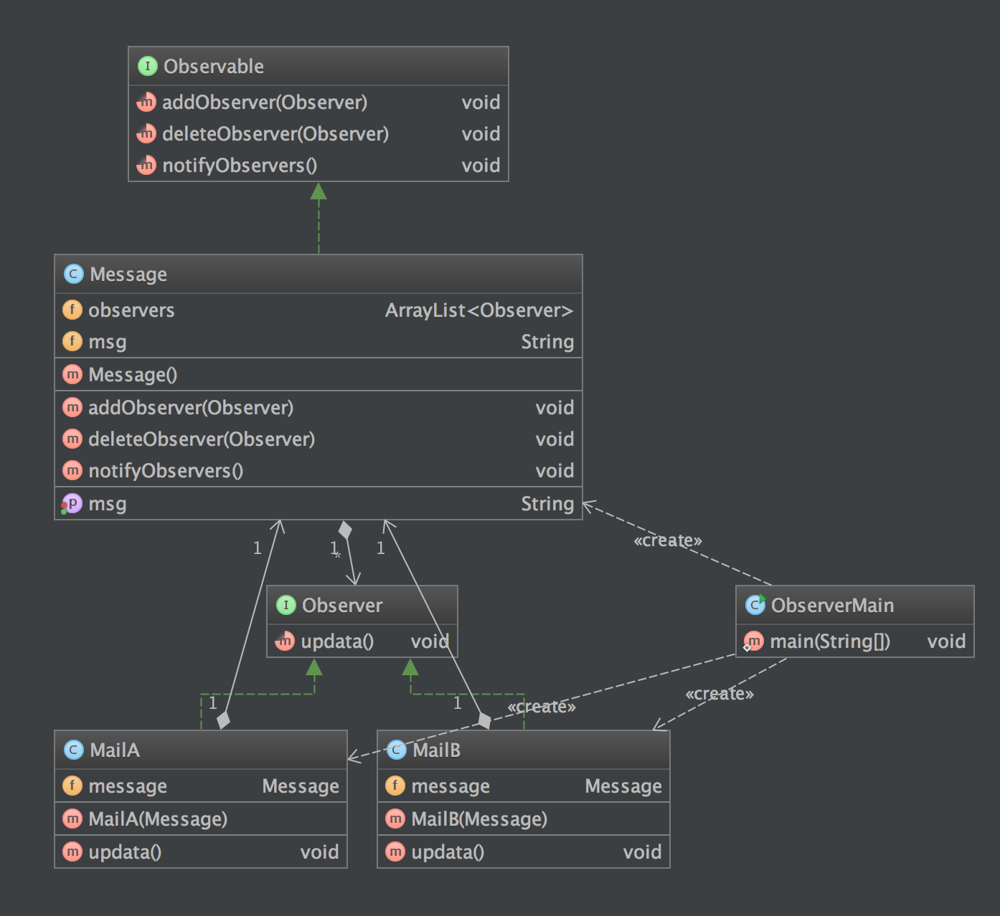

定义
观察者模式定义了对象之间的一对多依赖，这样一来，当一个对象改变状态时，它的所有依赖都会受到通知并自动更新
使用场景
- 对象之间的一对多依赖。一个对象状态的更新时，其他对象需要自动更新，而且其他对象的数量动态可变。（注册、反注册）
- 对象仅需要将自己的更新通知给其他对象而不需要知道其他对象的细节。 (解耦)
- MVC 中的 View 层实现
UML 图

- Observable:抽象主题，抽象主题角色把所有对观察者对象的引用保存在一个聚集（比如ArrayList对象）里，每个主题都可以有任何数量的观察者。抽象主题提供一个接口，可以增加和删除观察者对象，抽象主题角色又叫做抽象被观察者(Observable)角色。
- Message:具体被观察对象
- Observer :抽象观察者,为所有的具体观察者定义一个接口，在得到主题的通知时更新自己，这个接口叫做更新接口。
- 是接口，MailA/MailB 分布实现了这个接口，Observable中持有 Observer，当数据发生变化时，调用 update()接口
简单实现
步骤
- 定义Observer接口
- 具体类实现Observer接口
- 定义 Observable 接口，其中定义增加和删除观察者、通知观察者等接口
- 在需要被观察对象中实现Subject接口
- 客户端使用时 需要注册观察者
例子
定义Observer接口
package io.github.xuyushi.observer;
/**
* Created by xuyushi on 15/11/8.
*/
public interface Observable {
void addObserver(Observer observer);
void deleteObserver(Observer observer);
void notifyObservers();
}
具体类实现Observer接口
package io.github.xuyushi.observer;
/**
* Created by xuyushi on 15/11/8.
*/
public class MailA implements Observer {
private Message message;
@Override
public void updata() {
System.out.println("Mail A receive:" + message.getMsg());
}
public MailA(Message message) {
this.message = message;
message.addObserver(this);
}
}
package io.github.xuyushi.observer;
/**
* Created by xuyushi on 15/11/8.
*/
public class MailB implements Observer {
private Message message;
@Override
public void updata() {
System.out.println("Mail B receive:"+ message.getMsg());
}
public MailB(Message message) {
this.message = message;
message.addObserver(this);
}
}
定义 Observable 接口
package io.github.xuyushi.observer;
/**
* Created by xuyushi on 15/11/8.
*/
public interface Observable {
void addObserver(Observer observer);
void deleteObserver(Observer observer);
void notifyObservers();
}
在需要被观察对象中实现Subject接口
package io.github.xuyushi.observer;
import java.util.ArrayList;
/**
* Created by xuyushi on 15/11/8.
*/
public class Message implements Observable {
private ArrayList<Observer> observers;
private String msg;
public String getMsg() {
return msg;
}
public void setMsg(String msg) {
this.msg = msg;
notifyObservers();
}
public Message() {
observers = new ArrayList<>();
}
@Override
public void addObserver(Observer observer) {
observers.add(observer);
}
@Override
public void deleteObserver(Observer observer) {
int i = observers.indexOf(observer);
observers.remove(i);
}
@Override
public void notifyObservers() {
for (Observer observer : observers) {
observer.updata();
}
}
}
客户端使用
package io.github.xuyushi.observer;
/**
* Created by xuyushi on 15/11/8.
*/
public class ObserverMain {
public static void main(String[] args) {
System.out.println("ObserverMain RUN");
// write your code here
Message message = new Message();
MailA mailA = new MailA(message);
MailB mailB = new MailB(message);
message.setMsg("new message");
System.out.println("unregistered MailB");
message.deleteObserver(mailB);
message.setMsg("after unregistered MailB");
}
}
运行结果
ObserverMain RUN
Mail A receive:new message
Mail B receive:new message
unregistered MailB
Mail A receive:after unregistered MailB
Process finished with exit code 0
总结
- 观察者模式的优点：
- Subject和Observer之间是松偶合的，分别可以各自独立改变。
- Subject在发送广播通知的时候，无须指定具体的Observer，Observer可以自己决定是否要订阅Subject的通知。
- 遵守大部分GRASP原则和常用设计原则，高内聚、低偶合。
- 观察者模式的缺陷：
- 松偶合导致代码关系不明显，有时可能难以理解。(废话)
- 如果一个Subject被大量Observer订阅的话，在广播通知的时候可能会有效率问题。（毕竟只是简单的遍历）
- 观察者模式没有相应的机制让观察者知道所观察的目标对象是怎么发生变化的，而仅仅只是知道观察目标发生了变化。
- 在JDK的java.util包中，提供了Observable类以及Observer接口，它们构成了Java语言对观察者模式的支持。
参考
https://sourcemaking.com/design_patterns/observer
http://www.cnblogs.com/java-my-life/archive/2012/05/16/2502279.html
http://design-patterns.readthedocs.org/zh_CN/latest/behavioral_patterns/observer.html
『head first 设计模式』